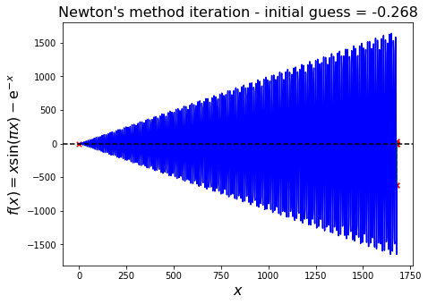
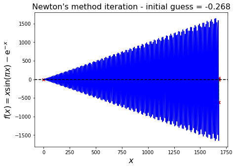

Roots of equations
Contents
Roots of equations#
Linear equations#
A system is said to be linear if it can be represented by a linear function (i.e. a straight line in 1D):
\[ f(x) = a + kx,\]
where \(f(x)\) is a quantity of interest that depends on some variable \(x\), which can be quantified through measurements or observations.
To a linear system we can associate a linear equation, where we set the function to be equal to something, hence the word equation. It can be written in the form:
\[ f(x) = 0 \quad \text{where} \quad f(x) = a + kx.\]
We’ve set the function equal to something (here we chose zero) to obtain an equation.
Non-linearity#
The majority of real world systems cannot be expressed in such simple (linear) terms. They are then called nonlinear systems, and equations representing them contain terms like:
\( x^2, x^3,\ldots\), e.g. higher \(>1\) order powers that would appear in polynomials.
\( \sqrt{x}, x^{1/3}, x^{\pi},\ldots\), e.g. roots, radicals and other non-integer polynomials.
\(\tan(x), \sin(x), \log(x), \text{erf}(x), \ldots\), e.g. trigonometric and other special functions.
You should be familiar, for example, with quadratic equations \(f(x) = a x^2 + bx + c = 0\), for which there exist the well known analytic solutions:
\[x_{1,2} = \frac{-b \pm \sqrt{b^2 - 4ac}}{2a}.\]
The solutions are commonly referred to as the roots of the equation - this means that \(f(x_{1}) = f(x_{2}) =0\).
Note
The discretisations of nonlinear ODEs or PDEs (e.g. being nonlinear in order to accurately represent the nonlinear real world) results in nonlinear discrete systems for which we need to make use of techniques such as those introduced in this notebok. Discretization is the process of transferring continuous functions, models, variables, and equations into discrete counterparts. Discretizing ODEs or PDEs often mean we concern ourselves with a limited range for the ODEs and the PDEs, where we are actually interested. For example, ODEs and PDEs can be used to describe fluid motion, and a key parameter in the motion of material in Earth’s mantle (Earth’s mantle can be considered, on the geological time scale of things, to be a fluid with no strength) is temperature. However, we know that the Earth’s mantle could only possibly be within a certain temperature range, i.e. we are not expecting the mantle to be close to absolute zero, or to be hotter than the Sun, so we limit ourselves to analyzing a limited range of temperatures for our PDEs and ODEs. If your solution to ODE or PDE somehow ends up telling you that the interior of the Earth is hotter than the Sun in your simulations, you might want to double check why Earth is not undergoing nuclear fusion!!
Example#
An example of a nonlinear problem without trivial solution is:
\[ x = \tan(x).\]
There is no exact analytic solution to this equation, so we have to devise methods to find approximate solutions. That is, we are looking for \(x_{\text{approx}}\) such that
\[ x {\text{approx}} \approx \tan(x{\text{approx}}) \]
to a set tolerance (or precision).
Note that we can of course equivalently look to solve the problem
\[ f(x) \approx 0 \quad\text{where}\quad f(x)= x - \tan(x), \]
or equivalently we could instead choose to define \(f(x)= \tan(x) - x\).
We will often do this (move all terms of our equation to one side and set equal to zero) to make our presentation of the theory below, as well as our implementation of solvers, generic. In this context a solution to the problem \(f(x)=0\) is called a root.
Picard’s method of successive approximations (or fixed point iteration)#
Fixed points#
Before moving on to problems written in the completely general form \(f(x) = 0\), in this section we will consider equations that can be written as:
\[ x = g(x),\]
where \(g\) is a given function.
An \(x\) that satisfies this equation is sometimes called a fixed point of the function \(g\). It’s called this since if we keep applying the function \(g\) to the output, then the output never changes, i.e.
\[x = g(x) = g(g(x)) = g(g(g(x))) = \ldots.\]
As an example, consider the function
\[ g(x) = x^{2}-3x+4.\]
This has the fixed point 2, since \(g(2)=2\).
While the example
\[g(x) = x+1,\]
clearly has no fixed points - every application of the function adds another one to our \(x\).
If we plot the function \(y = g(x)\) as a curve in \((x,y)\) space then the fixed points (if they exist) are the locations where this curve intersects with the line \(y=x\).
Let’s see some examples.
<Figure size 1200x400 with 3 Axes>
From the graphs we can observe that the first example has a unique fixed point, the second has no fixe dpoints and the third one has infinitely many fixed points.
Algorithm for Picard iteration#
The simplest method to find approximate fixed points/roots to this kind of equation consists in guessing \(x\), plugging it into the right-hand-side \(g(\cdot)\) and evaluating the function. The resulting new value for \(x\) is then used as an updated guess.
A sequence of \(x^{(k)}\) values are thus defined via the iteration:
\[ x^{(k+1)} = g\left(x^{(k)}\right), \]
starting from some initial guess \(x^{(0)}\).
This procedure can be repeated until some stopping criteria is met, e.g. when two consecutive values for \(x\) differ by less than some user-defined tolerance.
Note that here
\[x^{(k+1)} - x^{(k)} = g\left(x^{(k)}\right) - x^{(k)}\]
and so the ‘change in \(x\)’ value dropping below our tolerance is equivalent to us satisfying \(x=g(x)\) to that same tolerance!
This strategy is often referred to as (Picard’s) method of successive approximations. A pseudo-code description of this solution strategy looks like
guess x
x_previous := x + 2*tolerance # so that the initial evaluation in the while loop is true.
while ( abs(x - x_previous) > tolerance ) do
x_previous := x
x := g(x_previous)
Let’s implement Picard’s method ourselves to solve \(x=e^{-x}\):
import matplotlib.pyplot as plt
import numpy as np
def picard(f, x, atol=1.0e-6):
""" Function implementing Picard's method.
f here is the function g(.) described in the lecture and we are solving x = g(x).
x is an initial guess.
atol is a user-defined (absolute) error tolerance.
"""
# Record number of function evaluations so we can later compare methods
fevals = 0
# Initialise the previous x simply so that while loop argument is initially true
x_prev = x + 2*atol
while abs(x - x_prev) > atol:
x_prev = x
x = f(x_prev) # One function evaluation
fevals += 1
#print('Current iteration solution: ',x)
print('\nPicard used', fevals, 'function evaluations')
return x
def g(x):
return np.exp(-x)
Let’s check our solution with SciPy inbuilt function scipy.optimize.newton:
# 0.9 is our initial guess
print('\nSolution from Picard = ', picard(g, 0.9, atol=1.0e-7))
import scipy.optimize as sop
# let's check our answer against a SciPy function: sop.newton.
def f(x):
return x - np.exp(-x)
print('Solution from SciPy =', sop.newton(f, 0.9))
Picard used 29 function evaluations
Solution from Picard = 0.5671432690088631
Solution from SciPy = 0.5671432904097843
To get a better idea of what is going on here let’s look at the progression of the intermediate results \(x^{(k+1)}\) from \(x^{(k+1)} = g\left(x^{(k)}\right)\), plotted them on top of the curve \(y = \mathrm{e}^{-x}\):
This is a so-called cobweb plot. A few observations from the plot:
We start from \(x^{(0)}=1.0\) - shown as \(x_0\) in the plot.
We evaluate \(g(x^{(0)}) = 0.36788…\). The red cross marked as \(x_0\) is plotted at the location \((x^{(0)},g(x^{(0)}))\).
We set our new iteration value, \(x^{(1)}\), to this ‘\(y\)’ value (i.e. 0.36788…) - the lowest green dashed horizontal line takes us from \(x^{(0)}\) to this new \(x^{(1)}\) - we jump horizontally to the \(y=x\) line given by the black dashed line.
We then evaluate \(g(x^{(1)}) = 0.69220…\) - the left most vertical green dashed line takes us to this value on the \(y\) axis where the second red cross marked with \(x_1\) is plotted at the location \((x^{(1)},g(x^{(1)})\).
We set our new \(x\) value to this (0.69220), and this is indicated by the top most horizontal green dashed line taking us back to the \(y=x\) black dashed line.
Evaluate \(g\) of this value giving us 0.50047, this is our next vertical line and so on, converging to our fixed point.
This plot shows that our algorithm converges to the point where \(x = g(x)\), which in our case is \(x = \mathrm{e}^{-x}\). For this example this is the point where both \(x\) and \(g(x)\) equal \(\sim\)0.57.
It should be obvious that this method is iterative in nature and that the solution can be expected to be an approximation accurate to a tolerance of \(e \leq\) atol.
Another way to visualise this is to plot the functions \(y = x\) and \(y = \mathrm{e}^{-x}\) in \((x,y)\) space and find the intersection:
fig = plt.figure(figsize=(5, 5))
ax1 = plt.subplot(111)
x = np.linspace(0, 1, 100)
ax1.plot(x, np.exp(-x), 'b', label=r'$y(x) = g(x) = \mathrm{e}^{-x}$')
ax1.plot(x, x, 'k--', label='$y(x)=x$')
# Our solution from Picard above: 0.5671430835570621
ax1.plot(0.5671430835570621, 0.5671430835570621, 'ro', label='intersection')
ax1.legend(loc='best', fontsize=12)
ax1.set_xlabel('$x$', fontsize=14)
ax1.set_ylabel('$y(x)$', fontsize=14)
ax1.set_title('Fixed point as the intersection of two curves', fontsize=14)
plt.show()
This graphical method shows the intersection point, \(x = \mathrm{e}^{-x}\), also at ~0.57.
This value is also termed a root of a closely related problem, as it satisfies
\[ 0 = f(x) = x - \mathrm{e}^{-x}.\]
In this expression we rearranged \(x = \mathrm{e}^{-x}\) to \(0 = x - \mathrm{e}^{-x}\) and defined \(f(x) = x - \mathrm{e}^{-x}\).
Thus, another solution strategy is to find a value \(x^\star\) such that \(f(x^\star) = 0\), or, in our case, \(x^\star- \mathrm{e}^{-x^\star} = 0\).
We can of course plot a similar intersection figure for this modified problem.
fig = plt.figure(figsize=(5, 5))
ax1 = plt.subplot(111)
x = np.linspace(-1, 2, 100)
ax1.plot(x, x-np.exp(-x), 'b', label='$y(x) = f(x) = x - \mathrm{e}^{-x}$')
# Add a zero line extending across axes
xlim = ax1.get_xlim()
ax1.plot([xlim[0], xlim[1]], [0., 0.], 'k--', label='$y(x)=0$')
ax1.plot(0.5671, 0., 'ro', label='intersection')
ax1.set_xlim(xlim)
ax1.legend(loc='best', fontsize=12)
ax1.set_xlabel('$x$', fontsize=14)
ax1.set_ylabel('$y(x)$', fontsize=14)
ax1.set_title('Fixed point as a root of $f(x)$', fontsize=14)
plt.show()
Subintervals and initial guesses#
As we have seen from the iterative method above, having a good initial guess is helpful when iterating for a solution to an equation. If you have made an initial guess that is very close to the solution, then it would take much fewer steps to get to the solution.
The graph above shows the root of \(f(x)\) at our solution \(x^* \approx 0.57\). By visual inspection, we see that \(f(x)\) has a root \(f(x^\star) = 0\) in the interval \(x^\star \in (-1,1)\).
Let’s consider an example:
\[2x + x \sin(x-3) = 5\quad \text{for}\quad x \in (-10,10).\]
By means of visual inspection we can find a subinterval \((a,b)\) such that
there exists an \(x^\star \in (a,b)\) such that \(f(x^\star) = 0\), and
\(f(x)\) is monotonic.
We define \(f\) such that the solution to the above equation is a root - i.e. move all the terms on to one side and set equal to zero.
You should find that in \((a,b)=(0,5)\), there exists a root, and also the function is monotonically increasing over this interval - we have excluded any local maxima or minima that occur in the function outside this restricted interval.
We can make use of this knowledge to help us identify a good starting guess for the root.
Root bracketing#
It can be important where the root lies. By visual inspection we can identify if roots exist for a function, and narrow down the interval in which a root can be found.
For the equation
\[f(x) = x - \text{e}^{-x},\]
we have shown by plotting earlier that a root is bounded in \((-1,1)\), and that \(f(x)\) is monotonically increasing over this interval.
With this in mind, we can define a root bracketing algorithm that marches along \(f(x)\) in increments of \(\Delta x\) and identifies a new, tighter (i.e. smaller) bracket around the root by detecting a change in sign of \(f(x)\).
This algorithm is also referred to as incremental search. It is important to know where the root is to solve the equation. If we would have known exactly where the root was, then there would be no need for iterative method. However, we could maybe try to narrow down the location where the root lies.
We could try to narrow down the area where our root is located. You will use multiple iterations to find the location of your root, and each iteration will improve upon the previous iteration to narrow down where the root is located. We call this root bracketing, since we are trying to find the location of the root by narrowing down the area where the root could be, but also incremental search, since each iteration is based on the previous iteration, and incrementally improves our search for the root.
For our root bracketing algorithm, we will start with a wide area, and check if there is a root located in that area. If there is a root, then we will break this area we found into smaller subintervals, and then try to find if there is root in them. If we find a root in a subinterval, then we would break this subinterval into even smaller pieces, i.e. subintervals of subinterval, and try to find a root in it. If we don’t find a root in a subinterval, or subinterval of subinterval, or subinterval of subinterval of subinterval, then we just ignore it, and only work with subintervals which have root in them.
The approach can be visualised as follows:
Let’s use subinterval \(x \in(0,5)\) for \(2x + x \sin(x-3) = 5\) to be solved with root bracketing algorithm.
At first we need to define the root_bracketing function that will solve for the bracket with the root.
def f(x):
return 2*x + x*np.sin(x-3) - 5
def root_bracketing(f, a, b, dx):
""" Function to perform root bracketing on the function f(.)
between a and b, with fixed interval size dx.
Returns the bracket of size dx that contains the root.
"""
# The sign function returns: -1 if x < 0; 0 if x==0; 1 if x > 0.
sign = np.sign(f(a))
while sign == np.sign(f(a)):
a += dx
if a >= b:
raise RuntimeError('no root within [a,b]')
return (a-dx, a)
Now, we can test the function:
a = 0.
b = 5.
dx = 0.1
print('Bracket with a root = (%.3f, %.3f).' % root_bracketing(f, a, b, dx))
Bracket with a root = (2.700, 2.800).
Bisection method#
Once we know that a root can be found in \(x \in (a,b)\), we can close in on it with an algorithm similar to root-bracketing/incremental search described above, but with a smart switch to gradually decrease \(\Delta x\) by a factor of 1/2, and change the marching direction depending on the sign of \(f(x_1)f(x_2)\), where \(x_1\) and \(x_2\) are the local bounds considered during the marching process.
The algorithm works as follows:
If there is a root in the interval \([x_1, x_2]\), then \(f(x_1)f(x_2) < 0\) (as \(f(x_1)\) and \(f(x_2)\) will be of different signs)
In order to halve the interval, we compute \(f(x_3)\), where \(x_3 = (x_1 + x_2)/2\) is the midpoint of the current interval.
If \(f(x_2)f(x_3) < 0\), then the root must be in \([x_2, x_3]\), and we record this by replacing the original bound \(x_1\) by \(x_3\),
otherwise, the root must lie in \([x_1, x_3\), in which case \(x_2\) is replaced by \(x_3\).
In either case, the new updated interval \([x_1, x_2]\) is half the size of the original interval.
The bisection is repeated until the interval has been reduced to some user-defined convergence tolerance.
You can find pseudo-code here.
A visualisation of the method illustrates the narrowing in of an ever-smaller bracket:
This algorithm has been implemented by SciPy under scipy.optimize.bisect. An example below shows how to use it:
def f(x):
return x - np.exp(-x)
a, b = -1., 1.
print("Root from SciPy bisection method = ", sop.bisect(f, a, b))
Root from SciPy bisection method = 0.5671432904109679
We can write our own code to implement a bisection algorithm and solve again for \(2x + x \sin(x-3) = 5\):
def bisection(fct, a, b, atol=1.0E-6, nmax=100):
n = 0
while n <= nmax:
c = (a+b)/2.
if fct(c) == 0. or (b-a)/2. < atol:
return c
n += 1
if np.sign(fct(c)) == np.sign(fct(a)):
a = c
else:
b = c
raise RuntimeError('no root found within [a,b]')
def f(x):
return 2*x + x*np.sin(x-3) - 5
a, b = 0., 5.
print("Our code = ", bisection(f, a, b))
print("SciPy code = ", sop.bisect(f, a, b))
Our code = 2.790355086326599
SciPy code = 2.7903546180675676
Newton method#
So far, above iterative algorithms use only one part of a functions information: its value, \(f(x)\). Newton’s method additionally uses \(f’(x)\) to infer the trend of the function in the vicinity of \(x\). This slope, together with the function value \(f(x)\), is used to find the intersection of the tangent at \(x\) with zero to get an improved guess of the root. The formula can be derived from the Taylor series expansion:
\[ f(x_{i+1}) = f(x_i) + f’(x_i)(x_{i+1}-x_i) + O(x_{i+1} - x_i)^2.\]
Let \(f(x_{i+1}) = 0\) to find
\[ 0 = f(x_i) + f’(x_i)(x_{i+1}-x_i) + O(x_{i+1} - x_i)^2\]
assuming \(x_{i+1}\) close to \(x_{i}\) we drop the higher order terms to find
\[ x_{i+1} = x_i - \frac{f(x_i)}{f’(x_i)}\]
which is the Newton-Raphson formula.
A pseudo pseudo-code for the algorithm looks like this:
guess x[0]
do
x[i] = x[i-1] - f(x[i-1])/dfdx(x[i-1])
while abs(x[i] - x[i-1]) > tolerance
The expression of the associated error indicates quadratic convergence:
\[\epsilon_{i+1} = -\frac{f’’(x)}{2f’(x)} \epsilon_{i}^2\]
Illustrated, for \(f(x) = x - \mathrm{e}^{-x}\), this approximation looks like the following:

The method has been implemented by SciPy - scipy.optimize.newton.
def f(x):
return x - np.exp(-x)
def dfdx(x):
return 1 + np.exp(-x)
x0 = -1. # initial guess
print("SciPy code = ",sop.newton(f, x0, dfdx))
SciPy code = 0.567143290409784
We can write our own code to implement a Newton’s method and solve again for \(2x + x \sin(x-3) = 5\):
def newton(f, x0, dfdx, atol=1.0e-6):
""" Function to implement the Newton-Raphson method
f is the function we are trying to find a root of
and dfdx is another function which return the derivative of f
"""
x = [x0]
fevals = 0
while True:
# Two function evaluations (f and dfdx)
x.append(x[-1] - f(x[-1])/dfdx(x[-1]))
fevals += 2
if abs(x[-1]-x[-2]) < atol:
print('Newton (analytical derivative) used',
fevals, 'function evaluations')
return x[-1]
def f(x):
return 2*x + x*np.sin(x-3) - 5
def dfdx(x):
return 2 - np.sin(3-x) + x*np.cos(3-x)
x0 = 0. # Initial guess
print("Our solution = ", newton(f, x0, dfdx))
print("SciPy solution = ", sop.newton(f, x0, dfdx))
Newton (analytical derivative) used 10 function evaluations
Our solution = 2.7903546180673837
SciPy solution = 2.7903546180673837
(Quasi-) Newton with approximate derivative#
The implementation of the Newton method above assumes that the derivative \(f^\prime(x)\) is readily available.
For many problems, however, the derivative is not easy to express analytically or we just don’t want to bother working it out and writing a function to implement it.
In these cases \(f^\prime(x)\) can be replaced by a difference approximation such as
\[ f’(x) \approx \frac{f(x+\Delta x) - f(x)}{\Delta x}. \]
Use of an approximate derivative renders the corresponding root finding algorithm a co-called quasi-Newton method.
Note that since we only have an approximate derivative we cannot in general expect this method to converge as well as Newton when we supply it with an exact derivative. This manifests in a reduction from perfect quadratic convergence - but still generally closer to quadratic that linear!
We will extend the Newton algorithm to compute \(f’(x)\) using the finite difference approximation.
def quasi_newton(f, x0, dx=1.0E-7, atol=1.0E-6):
""" Function to implement quasi-newton
f is the function we are trying to find a root of
"""
x = [x0]
while True:
dfdx = (f(x[-1] + dx) - f(x[-1]))/(dx)
x.append(x[-1] - f(x[-1])/dfdx)
if abs(x[-1]-x[-2]) < atol:
return x[-1]
def f(x):
return 2*x + x*np.sin(x-3) - 5
x0 = 0.
print("Our solution = ", quasi_newton(f, x0))
print("SciPy solution = ", sop.newton(f, x0))
Our solution = 2.7903546180673837
SciPy solution = 2.7903546180673837
Secant method#
The secant method replaces the local derivative in the Newton method by a difference approximation based on two consecutive \(x_n\). It follows that
\[ f’(x_n) \approx \frac{f(x_n) - f(x_{n-1})}{x_n - x_{n-1}}\]
which leads to the secant method
\[x_{n+1} = x_n - f(x_n) \left ( \frac{x_n - x_{n-1}}{f(x_n) - f(x_{n-1})} \right )\] The algorithm can be visualized as follows:
For \(2x + x \mathrm{sin}(x-3) = 5\), we will use subinterval \(x \in(0,5)\) to find \(x_0 = 0\) and \(x_1 = 0+0.1\), implement a secant algorithm and compare the result to scipy.optimize.newton.
def secant(f, x0, x1, atol=1.0E-6):
""" Function to implement the secant method
x0 and x1 are the two required guesses
f is the function we are trying to find a root of
"""
x = [x0, x1]
while True:
dfdx = (f(x[-1])-f(x[-2])) / (x[-1]-x[-2])
x.append(x[-1] - f(x[-1])/dfdx)
if abs(x[-1]-x[-2]) < atol:
return x[-1]
def f(x):
return 2*x + x*np.sin(x-3) - 5
x0 = 0.
x1 = x0+0.1
print("Our solution = ", secant(f, x0, x1))
print("SciPy solution = ", sop.newton(f, x0))
Our solution = 2.7903546180673446
SciPy solution = 2.7903546180673837
Potential convergence issues#
It’s important to understand the ways some of the methods we’ve introduced can go wrong, and again to emphasise the value of a good starting guess.
Let’s start by illustrating the basic concept of Newton root-finding methods for a well-behaved function
\[ f(x) = x^4 - 5.\]
We’ve said several times now that the convergence of many algorithms often depends on the initial values provided to them.
Complex equations, or systems thereof, provide plenty of situations that prevent convergence all together, lead to slow convergence, or cause convergence to an undesired root (e.g. one that is far from, and not the closest to, the initial guess). Their solution strongly depends on having a good initial guess.
For example,
\[ f(x) = x, \sin(\pi x) - e^{-x}, \] provides for ample pitfalls, in particular for gradient-based methods (e.g. Newton and secant).
We will illustrate these convergence issues below.
They mostly fall into one of three categories:
Multiple roots in the vicinity - the algorithm converges to one of them, but this “one” could change with only slight changes to the initial guess.
Nearly singular/numerical overflow - the local gradient at guess \(x^{(k)}\) is near zero, so that \(x^{(k+1)}\), the intersection of the local gradient approximation with the \(x\) axis is beyond the representable range. Even if we don’t get overflow, we can still jump to a location a long distance away from our initial guess and end up converging to the wrong root.
Oscillations - the algorithm bounces back and forth between (near) identical \(x^{(k)}\).
Multiple roots#
For many functions multiple roots exist, and the algorithm depends on and can be sensitive to the initial guess.
Let’s see an example where we choose two initial guesses (0.0 and 0.1) and visualise how this relatively small difference leads to convergence to different roots.
We see from the first plot that this problem has roots at just under 0.6 and just over 0.8. The initial guess of 0 leads to convergence of the Newton iteration to the larger root, whereas a slightly higher initial guess of 0.1 leads to the smaller root!
We confirm this behaviour is not a product of an issue with our implementation, and print the two actual root values, using calls to the SciPy function below.
x0 = 0.0
print("Solution for initial guess 0.0 = ", sop.newton(f, x0))
x0 = 0.1
print("Solution for initial guess 0.1 = ", sop.newton(f, x0))
Solution for initial guess 0.0 = 0.8191177934425945
Solution for initial guess 0.1 = 0.578262577864515
Nearly singular/numerical overflow#
In this case the gradient \(f’(x^{(k)})\) is close to zero, so that the new iteration value, \(x^{(k+1)}\), is orders of magnitude offset, perhaps too big even to be representable on our finite computer (overflow).
We see this with the following example.
 

Oscillation#
In this scenario the iterations are trapped in a region with gradients of approximately equal magnitude but opposite directions.
What happens if you increase the number of iterations?
Another similar example: